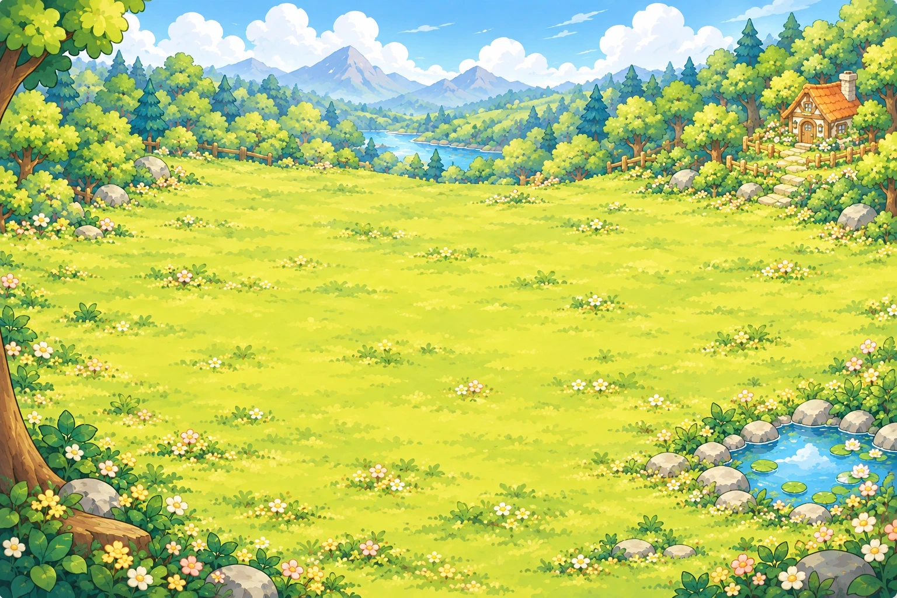

MY LITTLE SANCTUARY
어서 와요, 나의 작은 숲에
서두르지 않아도 괜찮아요. 오늘은 어떤 작은 추억을 만나게 될까요?
햇살 좋은 숲마음이 쉬어가는 오후

햇살 숲오늘도, 포근한 오후
나의 작은 주머니
71%
작은 반짝임을 눌러 숲의 선물을 모아보세요
FOREST LOG · YOUR OWN LITTLE WORLD
숲 산책 중반짝이는 아이템과 친구들을 눌러보세요